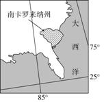
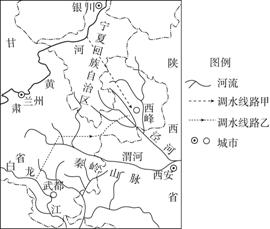
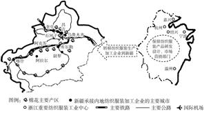
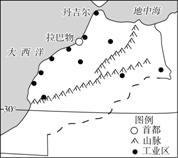

必修三第5章测试
幻灯片切换效果
None - Fade - Slide - Convex - Concave - Zoom
选择班级
幻灯片样式
Black (default) -
White -
League -
Sky -
Beige -
Simple
Serif -
Blood -
Night -
Moon -
Solarized
地处河西走廊的酒泉地区拥有丰富的风能资源，是我国首个获批建立的千万千瓦级风电基地。2017年6月，酒泉至湖南±800千伏特高压直流输电工程投运，每年可向湖南输送400亿千瓦时电量。据此完成1～3题。
1．酒泉至湖南±800千伏特高压直流输电工程( )
A．沿线降水自西向东递减
B．东端土壤结构疏松
C．两端资源型产业潜力大
D．东端城市化进程慢
解析 第1题，酒泉至湖南±800千伏特高压直流输电工程沿线降水自西向东增多；东端湖南地区土壤为红壤，土质黏重；两端矿产资源丰富，因此资源型产业潜力大；东端经济发展迅速，城市化进程快。
2．下列酒泉风电基地可持续发展策略合理的是( )
A．参与西北电网建设，提高电能跨区域调配能力
B．关闭区域内火电站等，尽量减少其他电源数量
C．对风电基地风能资源进行拆分建设，扩大开发范围
D．发展风电装备制造产业，重点扶持零配件装备企业
第2题，酒泉风电基地可持续发展策略合理的是利用当地风能资源丰富的优势，开发电力，参与西北电网建设，提高电能跨区域调配能力。
3．酒泉风电基地以及酒泉至湖南±800千伏特高压直流输电工程建设的影响可能有( )
A．降低输电线路沿线土地的经济价值
B．增加沿线地区噪声、电磁辐射等污染
C．使湖南省变为煤电东输的主要省级行政区
D．改变了我国人口流动方向
第3题，酒泉风电基地以及酒泉至湖南±800千伏特高压直流输电工程的建设会提升输电线路沿线土地的经济价值，会增加沿线地区噪声、电磁辐射等污染。酒泉风电基地及酒泉至湖南±800千伏特高压直流输电工程开发、输送的主要为风电，不会使湖南省成为煤电东输的主要省级行政区。我国人口流动方向不会因此而改变。
目前，我国国内的棉花价格约比国际市场高1/3，为保护棉农利益，我国控制国际棉花进口；我国纺织行业工人工资一般为美国的1/4，是Y国的3倍。我国一些纺织企业为利用国际市场棉花，在国外建纺纱厂，并将产品(纱线)运回国内加工。2014年，因国际纠纷，我国多家纺织企业在Y国的工厂生产设施遭到破坏。在我国同行业企业纷纷到Y国建厂的情况下，总部位于杭州的科尔集团却在美国南卡罗来纳州建纺纱厂。下图是南卡罗来纳州位置图。据此完成4、5题。
4．科尔集团在国外建纺纱厂最重要的原因是( )
A．国外原料丰富
B．国外棉价较低
C．接近消费市场
D．国外技术力量强
解析 第4题，目前，我国国内的棉花价格约比国际市场高1/3，科尔集团在国外建纺纱厂最重要的原因是国外棉花价格低，故选B项。
5．科尔集团最终选择在美国的南卡罗来纳州建厂，其主要原因是
A．离原料产地、市场近
B．技术力量雄厚
C．消费市场广阔
D．投资风险较小
第5题，南卡罗来纳州是棉花产区，在此建厂接近原料产地，成本低，且政策比较稳定，投资风险较小，D项正确。在美国纺出的纱并不直接在当地销售，需运回中国进行再加工。我国纺纱技术较为成熟，美国在此方面并无明显优势。
近年来欧美、日本、中国等国家及地区的资本和产业的进入使得印度经济持续发展，而在中国“一带一路”的带动下，印度经济还将持续快速增长。据此完成6、7题。
6．印度要承接国外棉纺企业的进入，最需要解决的问题是( )
A．原料成本高
B．基础设施落后
C．国内市场狭小
D．技术水平较低
解析 第6题，棉纺企业属原料导向型工业，印度是产棉大国，原料丰富；印度人口众多，劳动力充足，国内市场广阔；棉纺工业对技术水平要求不高；印度经济落后，基础设施落后，制约工业的发展。
7．其他国家及地区的资本和企业进入印度，产生的影响有( )
A．提高了印度的环境质量
B．降低了印度的城市化水平
C．缓解了印度的就业压力
D．有利于印度民族企业的发展
第7题，外国资本和企业的进入，给印度带来了大量的就业机会，有利于提高印度的城市化水平，缓解就业压力，但工业的发展也带来了污染；外国企业的进入在一定程度上不利于印度民族企业的发展。
近年来，江苏省南通市纺织和服装等企业“扎堆”向有着几十年纺织产业历史的河南省太康县转移，在太康县形成了一座“南通纺织城”。据此回答8、9题。
8．太康县吸引南通市纺织产业迁入的主要区位优势是( )
A．交通便捷
B．位于中原地带，市场广阔
C．劳动力丰富且廉价，纺织产业基础条件好
D．基础设施较完善
解析 第8题，河南省太康县纺织产业基础条件好，另外太康县劳动力丰富且廉价，南通市纺织产业迁入太康县可以降低生产成本，提高经济效益。
9．南通市纺织和服装等企业大量转移对南通市的影响主要是( )
A．造成产业结构失调，不利于经济发展
B．造成人口性别比失衡，社会失稳
C．有利于促进第一产业的快速发展
D．短期内造成部分劳动力失业
第9题，南通市纺织和服装等企业大量转出有利于南通市产业升级，但会造成南通市短期内部分劳动力失业。
甘肃省黄河流域地表水年可取水量为48.3亿立方米左右。白龙江是嘉陵江上游最大的支流，在甘肃省境内河流长381.5千米，流域多年平均自产水资源量为69.1亿立方米。读陇东跨流域调水线路示意图，回答10、11题。
10．相比调水线路甲，调水线路乙具有的明显优点是( )
A．可调水量大
B．水质好
C．施工难度小
D．投资成本低
解析 第10题，由材料可知，白龙江多年平均自产水资源量大，故调水线路乙具有的明显优点是可调水量大。
11．陇东跨流域调水工程如能顺利建成，可能产生的影响有( ) ①有利于陇东地区生态环境的改善 ②解决陇东地区严重的水土流失问题 ③武都段白龙江的年径流量增大 ④促进陇东地区社会经济的发展
A．①③
B．①④
C．②③
D．②④
第11题，陇东跨流域调水有利于改善陇东地区的生态环境，促进其社会经济的发展；陇东地区的水土流失主要是由人类破坏植被引起的，跨流域调水不能解决水土流失问题；白龙江武都段位于引水口的下游，调水工程将导致该段年径流量减小。
(2017·福建厦门模拟)中国华为技术有限公司(简称华为)，研发投入大，技术发展迅速，1996年已成为国内电信设备行业龙头。为谋求进一步发展，华为确立对外投资战略，在海外建立合资或独资的子公司：印度(1998年)、中东和非洲(2000年)、东南亚和欧洲(2001年)、美国(2002年)。目前其产品与服务已覆盖170多个国家和地区。据此完成12～14题。
12．华为确立对外投资战略的目的是( )
A．降低生产成本
B．发挥品牌效应
C．提高产品质量
D．拓展国际市场
解析 第12题，由材料可知，华为研发投入大，技术发展迅速，1996年已成为国内电信设备行业龙头，在国内市场所占份额较高，为谋求进一步发展，向外投资。因此，其对外投资战略的目的是扩大国际市场，故选D项。美国经济发达，劳动力成本高，技术先进，2002年华为在美国建立子公司，并不能降低生产成本和发挥品牌效应；印度、非洲经济落后，华为在这些地区建立子公司，并不能提高产品质量。
13．1997年，华为对外投资时不优先选择美国的原因主要是美国( )
A．优惠政策较少
B．技术水平较高
C．远离原料产地
D．电信设施完善
第13题，由材料可知，华为对外投资时优先选择经济发展水平和技术水平较低的地区，而没有选择美国，这是由于美国技术水平高，华为不具备竞争优势，故选B项。
14．华为在非洲建立子公司对当地的影响是( )
A．加剧资源供求矛盾
B．制约本土企业发展
C．增加当地就业机会
D．降低环境人口容量
第14题，华为为技术导向型企业，对资源的需求量小，在非洲建立子公司不会加剧资源紧张，A项错误。非洲经济发展落后，华为建立子公司可以促进当地电信产业的发展，B项错误。华为子公司的建立可以增加当地就业机会，C项正确。电信产业的发展会促进当地经济发展，经济发展水平的提高有利于环境人口容量增加，D项错误。
阿迪达斯是德国著名运动用品制造商，1980年开始关注中国体育用品市场，后逐渐将其生产线转入中国东莞、中山等城市，2006年，阿迪达斯在中国建立了世界范围内产能最大的生产流水线。然而，在2012年前后，印度尼西亚开始超越中国成为阿迪达斯全球产能最大的制造国家。2017年，阿迪达斯更是宣布重回德国开设智能机器人制造运动鞋工厂。据此回答15、16题。
15．1980年阿迪达斯开始关注中国市场的形式最可能是( )
A．进行品牌推广
B．建立仓储中心
C．建设生产中心
D．设立研发中心
解析 第15题，1980年阿迪达斯开始关注中国体育用品市场，其形式主要是进行品牌推广和产品销售。生产中心是随后建立的。
滴灌是现代农田节水灌溉技术之一。目前，滴灌技术在我国推广很难。下图为我国西北地区某地滴灌技术应用示意图。据此回答16、17题。
16．与印度尼西亚生产线相比，德国智能机器人生产的优势有( ) ①生产周期短 ②原料浪费少 ③员工监管不便 ④工资支出占总成本比重大
A．①②
B．③④
C．①③
D．②④
第16题，德国智能机器人生产工厂属于技术导向型，印度尼西亚生产线属于劳动力导向型。前者员工少，管理方便，技术研发支出占总成本比重大；后者员工多，管理不便，工资支出占总成本比重大。机器人生产效率高，出错率低，会缩短生产周期，减少原料浪费。
雅戈尔集团在我国云南省西双版纳傣族自治州勐海县建立汉麻产业园区，该产业园区现已成为全国汉麻的种植、加工中心及汉麻纤维化产业示范区。回答17、18题。
17．雅戈尔集团在云南勐海建立汉麻产业园区，主要考虑的是( )
A．交通便利
B．科技水平高
C．原料丰富
D．政策支持
解析 第17题，据材料及所学知识可知，云南勐海为汉麻主产区，因此在此建立产业园区主要考虑的是原料丰富。云南多山地，交通不便；经济发展起步晚，科技水平低；政策支持不是其主要原因。
近年来，苏州市沿江地带形成以冶金、能源、纺织、化工、粮油等基础产业为主的产业群体。下图中的Ⅰ、Ⅱ、Ⅲ示意苏州市城市化、工业化发展走廊。读图，完成18、19题。
18．该产业园区的建立对当地的主要影响是( ) ①促进了产业结构调整 ②改变了地理景观 ③增加了就业机会 ④推动了旅游业发展
A．①②③
B．②③④
C．①②④
D．①③④
第18题，该产业园区的建立，促进了当地产业结构调整，加快了城市化进程，改变了地理景观，增加了就业机会，但对旅游业影响不大。
2017年，一位法国人和一位美国人在新加坡创立了某茶叶品牌，推出了牛奶乌龙茶、火烈鸟茶、鸡尾酒时光茶等800多种不同口味的产品，销售价格从每50克60元到6 000元不等。该品牌茶叶的原材料来自全球不同的茶园，产品由欧洲顶尖的制茶师手工调配，销售门店的装修风格气派优雅。据此完成19～21题。
19．该茶叶品牌在新加坡创立，主要由于新加坡( )
A．制茶技术先进
B．原材料充足
C．市场需求量大
D．贸易条件好
解析 第19题，根据材料可知该产品是由欧洲顶尖的制茶师手工调配，故新加坡的制茶技术并不先进；茶叶原材料来自全球不同的茶园，可知新加坡当地原材料不充足；新加坡国土面积狭小，人口总数不多，虽然当地人可能有某种饮茶偏好，但该国国内茶叶消费市场需求总量并不大，且新加坡作为重要的海运中转地，贸易发达，当地制作好的茶产品可以面向全球不同地区进行销售，故在新加坡创立这种茶叶品牌，主要是由于新加坡贸易条件好。
城市集聚效应是指各种产业和经济活动在空间上集中产生的经济效果，以及吸引经济活动向一定地区靠近的向心力，是导致城市形成和不断扩大的基本因素。下图示意城市集聚效应与工业化水平的关系。读图，完成20、21题。
20．该品牌茶叶的核心竞争优势是( )
A．多样的原料来源
B．多元的创新产品
C．较低的销售价格
D．优雅的销售门店
第20题，产品核心竞争优势大多是产品的内在技术或创新技艺，正是因为创新，才可创建出人无我有的独特产品或技艺。因为该品牌茶是顶尖制茶师手工制作，个人手工的技艺不是人人所具备的，故该品牌茶叶的核心竞争优势是有独特的创新技艺，多元的创新产品可以满足更多顾客的需求，是其他茶产品所不具备的优势。
21．该品牌茶叶销售门店的最佳区位是( )
A．茶叶批发市场
B．住宅区周边
C．大型商业中心
D．茶叶种植园
第21题，该产品是由顶尖制茶师用手工调配，产品不像流水线一样可大量生产，(该产品的销售不适合批发)，故该品牌茶叶销售门店的最佳区位不是茶叶批发市场；由于该产品口味众多且价格档次不等，故该品牌茶叶销售门店应放在人流量大的商业区域，以满足不同层次消费者的需求；住宅区周边消费者相对固定，虽然住宅区人口数量也较多，但相对于大型商业区来说住宅区人口数量较少，不适合众多口味的茶品牌销售；该品牌茶叶部分产品价格相对较高，且原料来自全球不同茶园，在新加坡进行制作，面向销费人群的口味较多，故销售门店不适合建在茶叶种植园。
(2018·江苏)二十世纪六十年代以来，我国蔗糖产业的重心从台湾不断西移，1993年后，广西甘蔗种植面积和蔗糖产量稳居全国首位。广西地跨北回归线，其东部、北部和西北部为山地，中南部是平原。下图为“2016年广西蔗糖产量分布示意图”。据此回答22、23 题。
22．(双选)我国蔗糖产业重心西移的主要原因是( )
A．东部地区产业升级
B．东部地区环境退化
C．广西生产成本较低
D．广西消费市场广阔
解析 第22题，蔗糖产业属于原料导向型产业，对原料需求较大，随着经济的发展，东部地区甘蔗种植成本升高，产业升级转型导致甘蔗种植区西移，故A项正确；东部地区并不一定会出现环境退化；广西由于经济落后，蔗糖生产成本较低，故C项正确；广西蔗糖产业的市场在全国，而不是仅在广西省内销售。
23．(双选)广西中南部成为甘蔗种植集中区域的主要影响因素是
A．技术
B．资金
C．地形
D．气候
第23题，甘蔗需要湿热的气候，广西中南部纬度和地势都比较低，气候条件适合甘蔗种植，故C、D项正确。技术对甘蔗种植影响不大；甘蔗种植对资金的需求不大。
广东家具经过30多年的发展，已成为中国家具制造业最发达的地区、亚太地区最大的家具出口基地，主要市场为美国、欧盟、日本和东盟等国家和地区。但自2007年下半年起，广东家具产业走向低迷，先后有数百家企业倒闭。在这种背景下，很多家具企业加大了向中西部地区的产业转移力度，但也有大量企业宁愿留在广东进行企业转型。据此回答24、25题。
24．在产业环境恶化的背景下，大量企业依然不愿转移到中西部地区的原因有( ) ①广东人口密集，劳动力丰富且廉价 ②广东产业链完整，配套生产成本低 ③广东研发力量雄厚，物流成本低 ④广东政府扶持，优惠力度大
A．①②
B．②③
C．③④
D．①④
解析 第24题， 与广东相比，中西部地区劳动力更为廉价，①错误；中西部地区为引进家具制造业，政策更加优惠，广东为了促进产业转型，对劳动力导向型产业的优惠政策逐渐丧失，④错误；广东产业链完整，配套生产成本低，再加上广东研发力量雄厚，物流成本低，所以有大量企业依然不愿转移到中西部地区，②③正确。
25．中西部地区引进家具制造业的意义是( ) ①促进林业发展，改善生态环境 ②带动中西部地区高新技术产业的发展 ③促进产业升级，加快经济发展 ④扩大就业，推动工业化进程
A．①②
B．②③
C．③④
D．①④
第25题，中西部地区引进家具制造业，会加剧对森林资源的开发和利用，不利于生态环境的改善，①错误；家具制造业不属于高新技术产业，对中西部地区高新技术产业的发展影响不大，②错误；与广东相比，中西部地区经济较为落后，引进家具制造业有利于促进产业升级，加快经济发展，③正确；家具制造业的发展，能够扩大就业，促进工业化进程，④正确。
26．阅读材料，回答下列问题。(13分) 西电东送是指开发贵州、云南、广西、四川、内蒙古、山西、陕西等中西部省区的电力资源，输送到东部能源紧缺地区的工程。西电东送工程是西部大开发的标志性工程，也是西部大开发的骨干工程。下图是西电东送的三条路线示意图。
(1)三条送电路线的终点都是我国重要的工业基地，其中A是 京津唐工业基地，B沪宁杭是 工业基地，C是 珠江三角洲工业基地。
解析 第(1)题，读图即可得出三个工业基地的名称。
(2)第一条送电路线(北路)是将黄河中上游的水电和山西、陕西、内蒙古等省区丰富的煤炭资源转化成火电送出，输送火电这种做法有哪些优越性？
首先减轻了铁路运输的压力；其次减少了煤炭运输过程中的损耗和对铁路沿线地区的环境污染，使京津唐地区燃煤量大大减少，减轻其空气污染，降低其酸雨危害。
第(2)题，从图中可以看出，北路是将黄河中上游附近丰富的水电和山西、陕西、内蒙古等地丰富的火电输往华北地区；输电的优势可以从运输、损耗以及对环境的影响等方面分析。
(3)第二条送电路线(中路)输送的是水电，它将葛洲坝水电站、三峡水电站以及隔河岩等多座水电站的电能通过变压电网输往长江三角洲地区。发展水电对库区及长江上游地区自然环境和经济发展有哪些有利之处？
(3)为水电站修建的水库能改善库区周围的环境，使库区周围地区空气湿度增加，降水增多，有利于天然植被的生长；长江上游河道深度增加，通航能力增强，可促进水运发展；水库可发展水产养殖业，增加经济收入；可发展旅游业；建设水电站可以促进当地建筑业、钢铁及建材等工业的发展。
第(3)题，中路的输电路线从长江中上游地区指向长江三角洲地区，长江中上游的水电站有葛洲坝、三峡等；发展水电的有利之处可以从环境效益和经济效益等方面分析。
(4)第三条送电路线(南路)是将澜沧江、南盘江、北盘江、红水河的水电资源以及黔、滇两省的坑口火电站的电能开发出来送往广东。红水河(珠江支流)长度只有几百千米，为什么水能却很丰富呢？
(4)红水河地处亚热带湿润地区，流域内降水丰富，河流流量大；又位于我国地势的第二、三级阶梯交界处，落差也很大，因此水能资源丰富。
第(4)题，水能资源丰富的原因可以从水量、落差等方面分析。
27．阅读下列材料，完成下列问题。(13分) 材料一 新疆是我国重要的棉花产区，产量约占全国的三分之一。国家《纺织工业调整和振兴规划》明确提出“把新疆建成依托内地、面向中亚乃至欧洲的纺织品服装出口加工基地和区域性国际商贸中心”。
材料二 浙江省是我国纺织服装产业大省，长期以来，产品除满足国内需求，还远销美国和欧盟，产业整体效益水平在全国保持领先地位。近年来由于生产环境的变化，生产成本不断提高，浙江纺织服装业开始实施向中西部转移的策略。
材料三 下图为浙江纺织服装业向新疆转移示意图。
(1)从产品生产成本角度，说出新疆承接浙江纺织服装生产加工企业的有利条件。
(1)接近原料产区(或原料丰富)；土地和劳动力价格低。
解析 第(1)题，主要从原料、劳动力成本、地价等角度分析。
(2)分析浙江将纺织服装产品的研发设计、市场营销等部门保留在原地的原因。
(2)接近东部科技发达地区，人才聚集；具有稳定的消费市场(原有的销售渠道好，或消费市场广阔)；易于获取市场信息。
第(2)题，东部地区经济发达、市场广阔、技术力量强，因而研发、营销等部门保留在东部地区。
(3)分别说出产业转移对新疆、浙江两省区社会经济的有利影响
(3)对新疆：增加就业机会；加快工业化和城市化的进程；促进经济发展。对浙江：促进产业结构升级，加速经济发展。
第(3)题，对迁入区主要是增加就业机会，促进经济发展，促进城市化与工业化的发展；对迁出区主要是促进产业升级，加速经济发展。
(4)“十二五”期间，新疆欲将乌鲁木齐打造成区域性国际商贸中心的核心城市。分析乌鲁木齐成为区域性国际商贸中心核心城市的主要区位优势。
(4)为省级行政中心，商业贸易基础设施完善；陆、空交通便利，利于我国与邻国的贸易往来。
第(4)题，作为省级行政中心，乌鲁木齐基础设施完善、交通便捷，区位优势明显。
28．读摩洛哥略图，完成下列各题。(13分) 在摩洛哥丹吉尔的免税工业园区，目前进驻的有德国、法国、西班牙等国的汽车配件、电子、服装等产业，产品主要出口欧洲。
(1)试从交通运输的角度分析丹吉尔地理位置的重要性。
(1)丹吉尔位于摩洛哥北端，西濒大西洋，北隔直布罗陀海峡与西班牙相望；位于世界交通的十字路口，东进地中海和西入大西洋的船只从这里经过或停泊；地处大西洋进入地中海的入口处，扼地中海—大西洋国际航线要冲，交通位置十分重要。
解析 第(1)题，从交通运输的角度看，丹吉尔地处欧洲与非洲、地中海与大西洋之间的十字路口，地理位置非常重要。
(2)简析丹吉尔工业区承接德国、法国、西班牙等国产业转移的有利条件。
(2)临近直布罗陀海峡，海运便利；劳动力丰富廉价，地价低，生产成本低；靠近欧洲，市场广阔；政府政策支持。
第(2)题，从图中可以看出，丹吉尔位于直布罗陀海峡附近，海运便利；该地区距离欧洲近，市场广阔。摩洛哥是发展中国家，劳动力丰富廉价，地价低，生产成本低；有国家政策支持。
(3)简析汽车配件、电子、服装等产业进驻丹吉尔对摩洛哥的积极影响。
(3)有利于产业结构的优化与升级，加快工业化的进程；提高城市化水平；增加就业机会；带动相关产业发展，促进经济发展。
第(3)题，汽车配件、电子、服装等产业进驻丹吉尔对摩洛哥的积极影响可以从促进产业结构调整、提高工业化与城市化水平、增加就业机会及带动相关产业发展等方面分析。
29．读沿江承接产业转移示范区位置示意图及苏南某工业园区产值构成变化示意图，回答下列问题。(11分)

(1)安徽皖江区是国务院批准的第一个国家级承接产业转移示范区，简述该区承接产业转移的优势区位条件。
(1)毗邻长三角地区，水陆交通便捷；产业基础好；资源丰富；协作条件好；政策扶持；地价低廉；劳动力丰富等。
解析 第(1)题，注意从地理位置、交通、资源、政策、劳动力等方面回答。
(2)简述苏南某工业园区产值构成变化的特点，并分析其原因。
(2)特点：传统工业(劳动密集型、重污染企业)比重下降；高新技术产业比重上升。 原因：产业转移(产品升级换代)。
第(2)题，读取柱状图信息即可回答。
(3)重庆是我国四大直辖市之一，也是重要的承接产业转移区。简述该市承接产业转移对当地区域发展的影响。
(3)有利影响：促进产业结构升级；促进区域资源开发，带动区域经济发展；增加就业机会；促进区域均衡发展。 不利影响：可能会加剧环境污染。
第(3)题，注意从有利和不利影响两个角度回答。